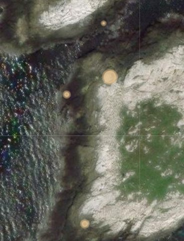
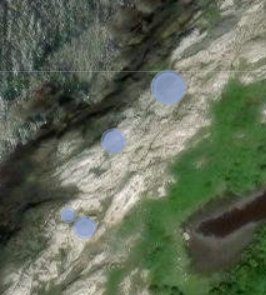
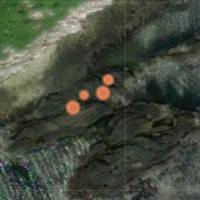
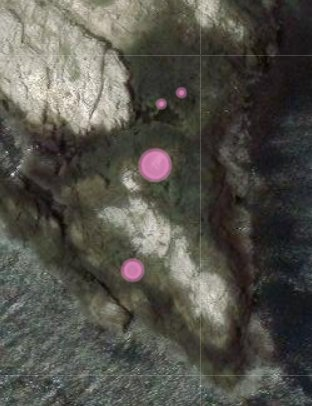
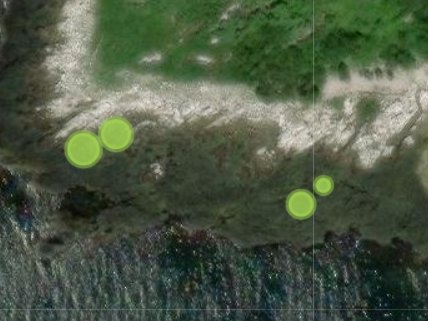
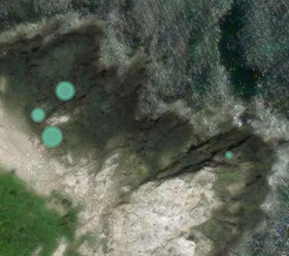
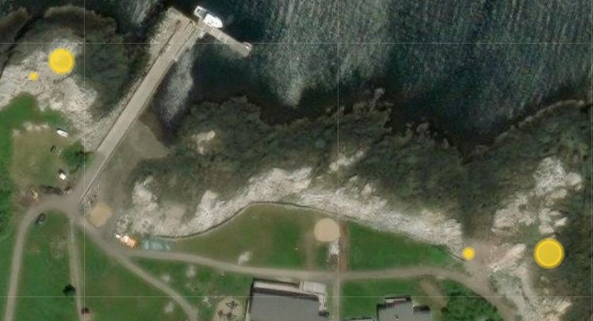

Shrimp
Field observations
Ava Brumfield, SURG 2025: My focus species is a northwest Atlantic grass shrimp. Nominally, there are four grass shrimp species in the Gulf of Maine. Palaemonetes pugio and Palaemonetes vulgaris are native species ranging from Maine to Texas, while Palaemon macrodactylus and Palaemon elegans are invasive species from the northwest Pacific Ocean and Europe. This summer I focused on P. elegans, which was observed at the Isles of Shoals in 2010 and was the only grass shrimp species that I observed in 2025.
{kind=link}
{kind=link}
{kind=link}
Where to find them
How to read the maps
- Remote underwater video site, higher abundance
- Remote underwater video site, seen infrequently
- Successful trap or seine effort (for seine species, blue diamonds also mark reliable tern foraging)
 Successful rod and reel catch
Successful rod and reel catch- Red marks on the dark bathymetry maps show bait-fishing catch locations
{kind=link}
Sampled seven sites across six islands, opportunistically choosing four tide pools to sample. Two traps per pool baited with mussels, one minnow trap and one hagfish (bucket) trap for 24 hours.
Tide pool sites
Overhead views of each site (White Island, Larus Ledge, Half Tide Ledges, Lunging Island, Smuttynose Island, Cedar Island, and Star Island). Both Larus Ledge and Half Tide Ledges are on Appledore island. The size of the colored dots represents the density of shrimp caught at each pool.
{kind=link}

{kind=link}

{kind=link}

{kind=link}

{kind=link}

{kind=link}

{kind=link}
